Философия Джона Крамера и его идеи
Если вы хотите подробнее ознакомиться с персонажем Пилы, очень
советуем уделить время на прочтении нашей другой статьи:
«Философия Пилы: Почему Джон Крамер – не просто злодей»
Джон Крамер, известный как Пила, строит свою философию вокруг идеи
испытания. Он выбирает людей, которые, по его мнению,
не ценят жизнь, разрушают себя или других, живут бездумно,
лгут, предают, используют чужую слабость. Его ловушки становятся
для них не просто наказанием, а страшным экзаменом:
готовы ли они бороться за существование, когда смерть
оказывается рядом?
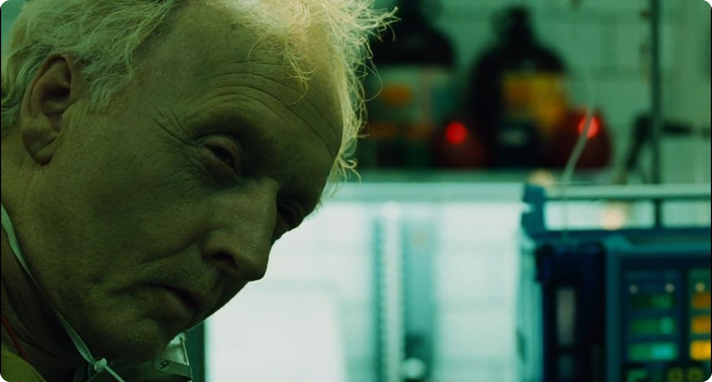
Хоррор, который начинается не с монстра,
а с выбора
В классических фильмах ужасов угроза часто приходит извне.
Это может быть маньяк с ножом, демон, чудовище, заражение или
проклятие. В «Пиле» угроза тоже есть, но она
устроена другим образом. Самый страшный элемент фильма
не только сам убийца, а ситуация, в которой человек
вынужден сделать выбор.
Персонажи не просто убегают от смерти. Они должны
решить, на что готовы ради спасения. Иногда это физическая
боль, иногда предательство, иногда признание вины, иногда
необходимость пожертвовать частью себя. В этом
и заключается особая жестокость фильма:
он не просто показывает страдание, он ставит
человека перед зеркалом.
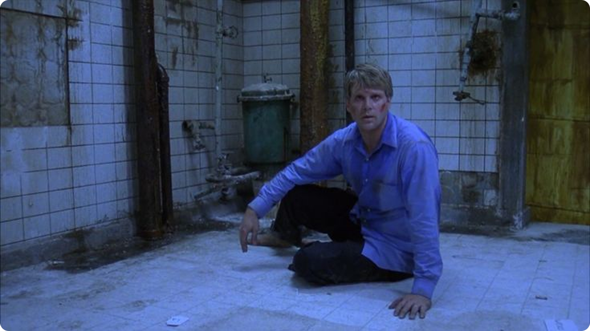
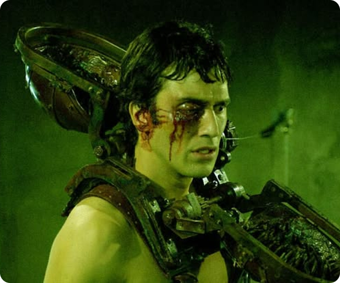
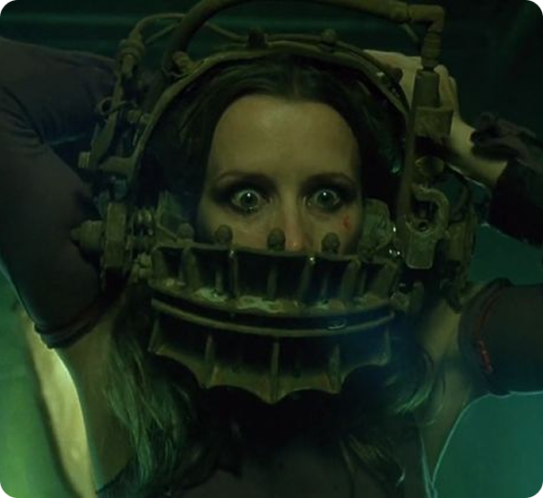
Всем персонажам дают шанс на выживание, и ключевым
ставится именно выбор: используют ли они этот шанс
или же нет. Такой сюжетный ход выделяет эту франшизу
на фоне остальных «кто умрёт следующим?», делая
из неё глубокое философское рассуждение.
Почему ловушки в «Пиле» не просто ради жестокости
Многие сцены во франшизе запоминаются именно из-за ловушек.
Например, в первой «Пиле» они важны
не только как страшные механизмы. Каждая ловушка —
это форма символического наказания. Она связана с тем, что
человек делал до попадания в игру.
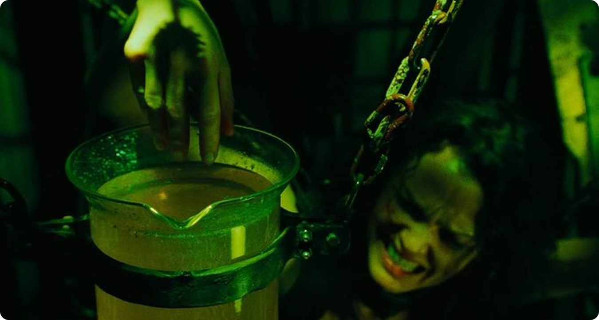
Это отличает «Пилу» от многих других хорроров.
Жертвы здесь не случайны. Их выбирают
за определённые поступки, слабости или моральные провалы.
Поэтому ловушки становятся мрачными метафорами.
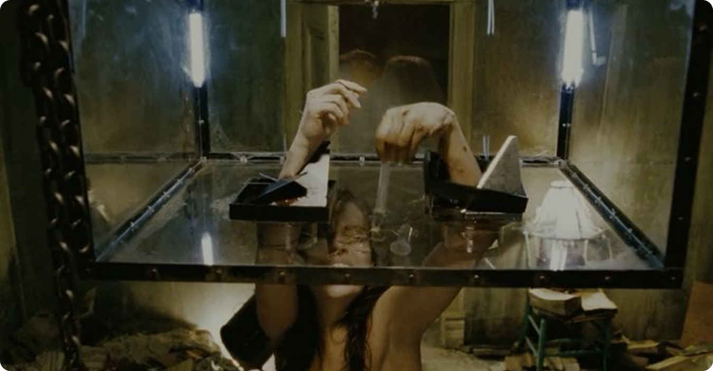
Например, в фильме и франшизе в целом часто повторяются такие
мотивы:
- человек, который вредил другим, должен испытать боль сам;
- тот, кто лгал, оказывается в ситуации, где правда становится вопросом жизни и смерти;
- зависимый человек сталкивается с телесным ужасом своего разрушения;
- эгоист вынужден выбирать между собой и другим;
- тот, кто обесценивал жизнь, должен бороться за неё.
За счёт этого «Пила» работает как извращённая
моральная притча. Она будто говорит: человек не замечает
ценность жизни, пока всё спокойно. Но стоит поставить его
перед смертью — и все оправдания исчезают.
Адам и Гордон: два разных взгляда на жизнь
Центральная история первой «Пилы» разворачивается
вокруг Адама и доктора Гордона. Они просыпаются
в грязной ванной, прикованные цепями, и постепенно
понимают, что стали участниками чужой игры. Их положение
почти безвыходно, а время ограничено.
Доктор Гордон выглядит человеком более собранным
и рациональным. У него есть семья, работа, статус,
внешне нормальная жизнь. Но постепенно выясняется, что
за этой «нормальностью» скрываются ложь,
отчуждение и моральная слабость. Он не выглядит
чудовищем, но он тоже не безупречен.
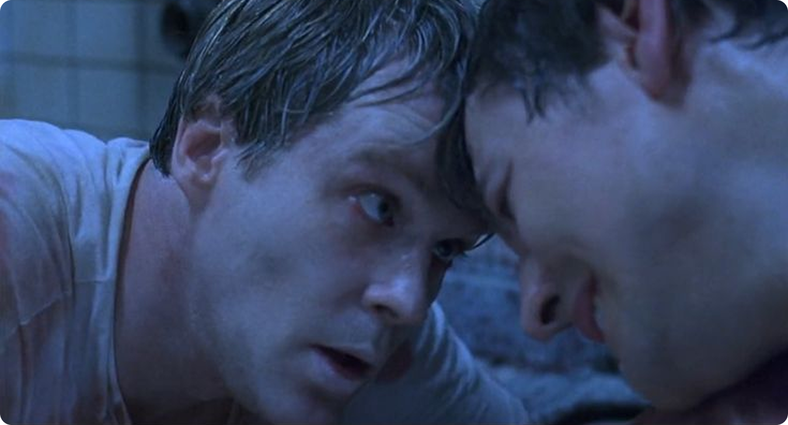
Адам, наоборот, кажется более хаотичным, циничным
и потерянным. Он живёт как наблюдатель за чужими
жизнями, фотографирует людей, остаётся на обочине событий.
В каком-то смысле он тоже не живёт полноценно,
а просто существует.
Их испытание страшно именно потому, что оно сдирает
с них защитные роли. Гордон больше не может быть просто
врачом и семьянином. Адам больше не может прятаться
за сарказмом. Перед смертью оба оказываются обычными людьми,
которые боятся, злятся, ошибаются и отчаянно хотят выбраться.
Почему именно Аманда Янг стала ученицей Джона Крамера?
Особенно важным примером в истории «Пилы»
становится Аманда Янг. Она не просто одна из жертв Джона
Крамера, а человек, который после испытания становится его
последовательницей. И это не случайность, ведь именно
Аманда лучше других показывает, насколько опасной может быть
философия Пилы.
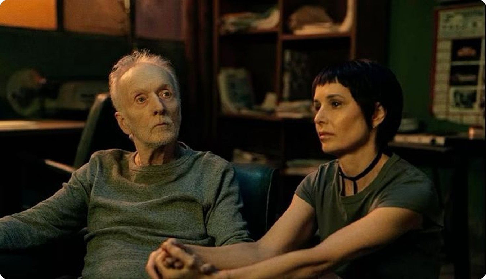
До попадания в ловушку Аманда была зависимой
и разрушала собственную жизнь. Для Джона это стало
доказательством того, что она «не ценит» своё
существование. Испытание должно было заставить её столкнуться
со смертью и выбрать жизнь. Формально так и произошло:
Аманда выжила. Более того, после этого она действительно
восприняла произошедшее как момент перерождения. В её глазах
Джон оказался не мучителем, а человеком, который
«спас» её.
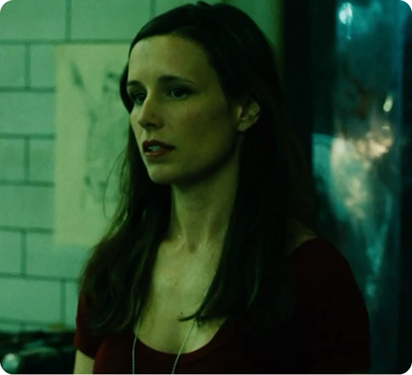
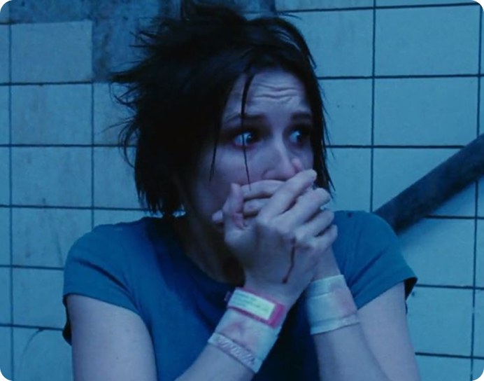
По сути она доказала Джону, что его метод
в доказательстве ценности жизни эффективен, поэтому
он и принял её. Сама Аманда же оказалась
психологически сломлена и не могла провести черту
осознанности между принятием философии Пилы и собственными
взглядами. После попадания в ловушку её жизнь
действительно изменилась, что создало иллюзию некого спасения.
Проблема, из-за которой у Аманды
и ни у кого больше не получится стать преемником Пилы
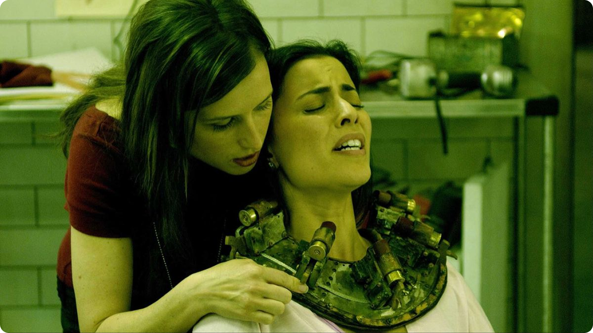
Главная проблема преемников Джона Крамера в том, что они
пытаются повторить его методы, но не могут повторить его
внутреннюю логику. У Пилы была чудовищная,
но всё же система: он считал, что даёт человеку
шанс, а не просто наказывает его. Его ловушки были
построены как испытания, где выживание возможно, если жертва
готова пройти через боль, признать вину или сделать выбор.
У Аманды этой системы уже нет. Она перенимает внешнюю сторону
философии Джона: ловушки, наказание, разговоры о ценности
жизни. Но по сути она действует иначе. Для неё ловушка
становится не испытанием, а приговором. Она
не верит, что люди действительно могут измениться, поэтому
создаёт ситуации, из которых невозможно выбраться.
И в этом её главное отличие от Крамера,
который не раз указывал ей на это. Пока Джон даёт
второй шанс, Аманда просто наказывает.
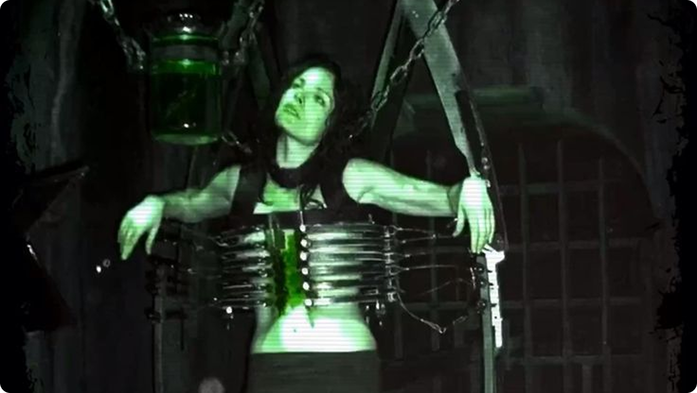
Аманда не может быть полноценной наследницей Пилы по нескольким
причинам:
- она действует из травмы, а не из убеждения;
- она не верит в возможность исправления человека;
- она превращает испытание в казнь;
- ей важнее наказать, чем дать шанс;
- она эмоционально зависима от Джона.
Но эта проблема касается не только Аманды. На самом
деле ни один ученик Джона не может стать его настоящим
преемником, потому что сама система Пилы слишком сильно завязана
на личности Крамера. Его философия держится не только
на правилах, а на его личной боли, болезни, утрате,
обиде на мир и желании доказать собственную правоту. Для
других людей эта система становится просто набором жестоких
инструментов.
Именно поэтому любой преемник неизбежно искажает идею Джона. Один
будет мстить. Другой — убивать под видом
справедливости. Третий — использовать ловушки как
способ власти. Даже если они повторяют его слова, смысл меняется.
Там, где Крамер видел «урок», его ученики видят
возможность решать, кто достоин жить, а кто нет.
Ценность жизни не равна инстинкту выживания
Одна из самых интересных мыслей фильма в том, что
желание выжить и умение ценить жизнь —
не одно и то же. Почти любой человек
в смертельной опасности будет бороться. Это инстинкт.
Но означает ли это, что после спасения
он действительно станет другим?
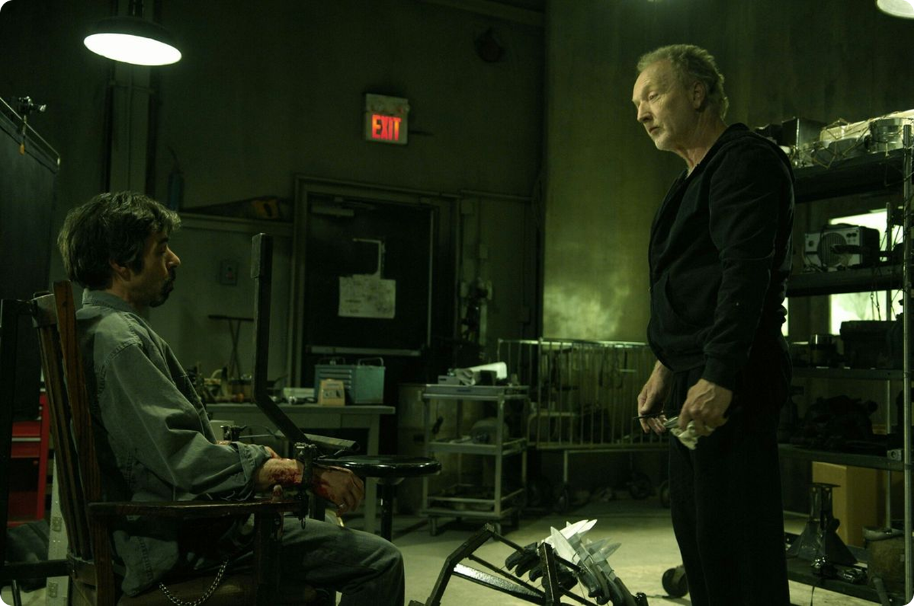
Джон Крамер верит, что да. Он считает, что боль способна
переродить человека. Но фильм показывает, что всё сложнее.
Травма не всегда делает людей лучше. Иногда она ломает
их окончательно. Иногда человек выживает физически,
но теряет способность нормально жить дальше.
В этом смысле философия Пилы выглядит не мудрой,
а чудовищно упрощённой. Он берёт реальную
мысль — люди часто не ценят жизнь, пока
не столкнутся с потерей — и превращает
её в оправдание пыток. Правда в том, что
благодарность к жизни невозможно насильно выбить
из человека. Её можно осознать через боль,
но нельзя гарантированно создать болью.
Почему зритель всё равно вовлекается?
Несмотря на очевидную жестокость Джона, зритель невольно
вовлекается в его игры. Это неприятная, но важная часть
успеха фильма. Мы смотрим на ловушки и думаем
не только о жертвах, но и о правилах.
Был ли шанс? Можно ли было выбраться? Что бы
сделал я?
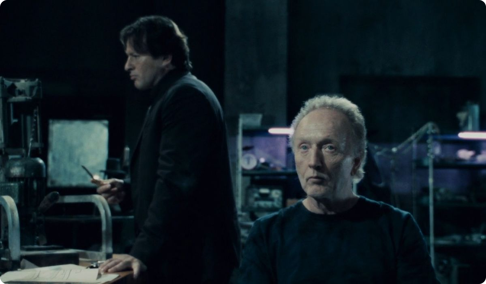
Фильм цепляет по нескольким причинам:
- он превращает ужас в задачу;
- заставляет зрителя морально оценивать персонажей;
- даёт ощущение несправедливой, но строгой системы;
- соединяет детектив, триллер и хоррор;
- ставит человека в ситуацию предельного выбора.
Именно поэтому «Пила» вызывает не только
отвращение или страх, но и странное интеллектуальное
напряжение. Зритель не просто наблюдает за кошмаром,
а пытается понять его логику.
Итог: «Пила» страшна не кровью,
а вопросом к человеку
Франшиза «Пила» стала культовой не потому, что
была самым кровавым фильмом своего времени. Её сила
в другом: она взяла простую, почти философскую мысль
о ценности жизни и довела её до предела.
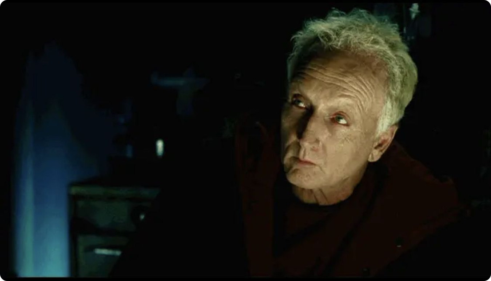
Фильм показывает, что человек часто живёт автоматически: врёт,
разрушает отношения, тратит время, не замечает близких,
не думает о последствиях. Но когда появляется
реальная угроза смерти, всё лишнее исчезает. Остаётся только один
вопрос: хочешь ли ты жить — и что готов
сделать ради этого?
Именно в этом противоречии и заключается главная глубина
фильма. «Пила» — не просто история
о пытках, а мрачный разговор о жизни, вине, страхе
и цене второго шанса.